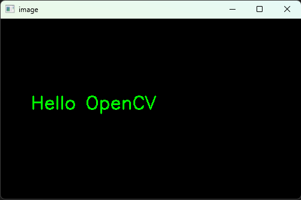
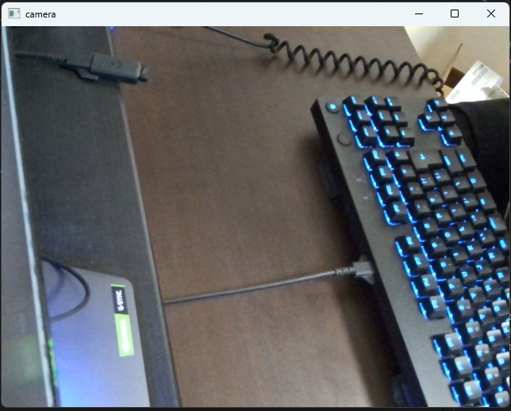
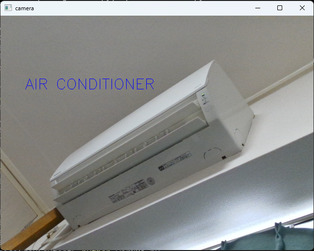

以下，難しくてわからないところ・うまく動かないところがあれば連絡ください．
OpenCV(画像処理ライブラリ)を使ってプログラミングしてみましょう．
情報学科の学生は「プログラミングⅠ」でPythonの実行環境が用意できているはず...
PythonでOpenCVのライブラリが扱えるようにしましょう．
以下のコマンドをターミナルで実行してみてください． "> "は入力してはいけません．
授業で使ってたのはコマンドプロンプトかな？？
> pip install opencv-contrib-python
> pip install numpy
cvtest01.py というファイルを作成して以下のコードを記述してください．
import cv2
import numpy as np
# 黒い画像を作成（高さ300, 幅500）
img = np.zeros((300, 500, 3), dtype=np.uint8)
# 文字を描画
cv2.putText(
img,
"Hello OpenCV",
(50, 150),
cv2.FONT_HERSHEY_SIMPLEX,
1,
(0, 255, 0)
)
# 表示
cv2.imshow("image", img)
cv2.waitKey(0)
cv2.destroyAllWindows()
ターミナルで実行してみましょう．
> python cvtest01.py
以下のようなウインドウが表示されます．

先のソースコードには以下のような記述がありました．
# 文字を描画
cv2.putText(
img,
"Hello OpenCV",
(50, 150),
cv2.FONT_HERSHEY_SIMPLEX,
1,
(0, 255, 0)
)
cv2.putText() は以下の形式で引数を入力することで文字描画を行うことができます．
cv2.putText(画像, 文字列, 位置, フォント, サイズ, 色)
参考：【Python・OpenCV】画像にテキストを描画する方法(cv2.putText)
各々の引数の値を変更して，表示がどのように変わるか試してみてください．
以下のソースコードを cvtest02.py というファイル名で保存して実行してみましょう．
import cv2
# cv2はOpenCV（画像処理ライブラリ）をPythonから使うためのモジュール
# カメラを起動して映像を取得する準備
cap = cv2.VideoCapture(0)
# ここからループ処理（カメラ映像をリアルタイムで表示）
while True:
# カメラ(cap)から1フレーム（1枚の画像）を取得
ret, frame = cap.read()
# エラー処理
if not ret:
print("フレーム取得失敗")
break
# 取得した画像をウインドウに表示
cv2.imshow("camera", frame)
# ESCキーを押したらループ(while)を抜ける(break)
if cv2.waitKey(1) == 27: #ESCキーは「27」という値として取得される(ASCIIコード)
break
# カメラを解放する（使い終わったので閉じる）
cap.release()
# ウインドウを閉じる
cv2.destroyAllWindows()
ターミナルで以下のように入力すれば実行できます．
> python cvtest02.py
うまくいけばいかのようにWebカメラの画像がリアルタイムで表示されます．

Escキー でウインドウを閉じることができます．
OpenCVを利用することで，このようにカメラ画像の取得が簡単にできます．
OpenCVで取得したカメラ画像の上に文字を描画して表示させてください．

cvtest02.py に処理を追加することで実装できます．
import cv2
cap = cv2.VideoCapture(0)
if not cap.isOpened():
print("カメラ開けない")
exit()
while True:
ret, frame = cap.read()
if not ret:
print("フレーム取得失敗")
break
###### ここに処理を追加する ######
cv2.imshow("camera", frame)
if cv2.waitKey(1) == 27:
break
cap.release()
cv2.destroyAllWindows()
cvtest01.py で使った cv2.putText() の引数にカメラで取得した画像を指定することで実装できます．(img の部分を変える)
cv2.putText(
img,
"Hello OpenCV",
(50, 150),
cv2.FONT_HERSHEY_SIMPLEX,
1,
(0, 255, 0)
)
頑張ってください．